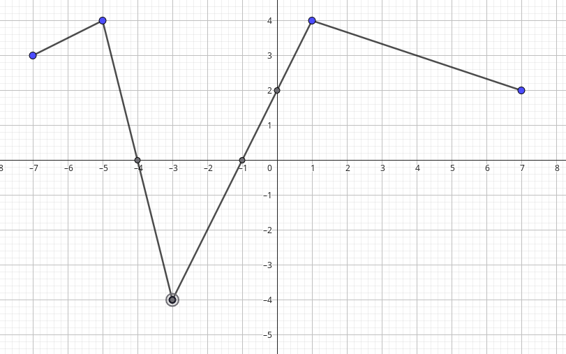
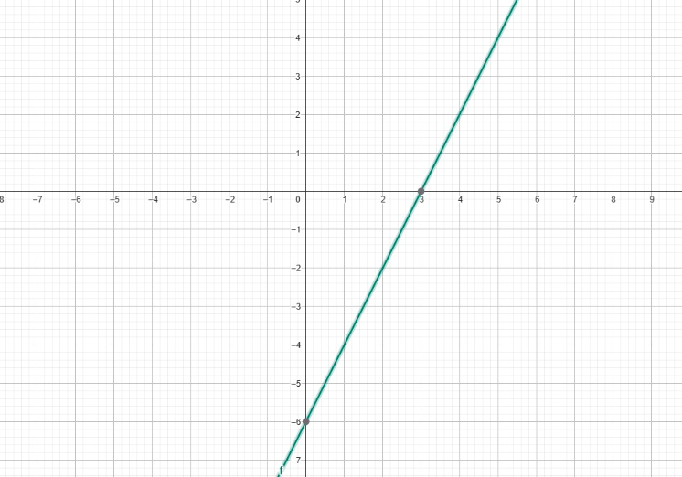

Uma caixa d’água de um pequeno condomínio tem capacidade inicial de 12 000 litros. Para manutenção, instala-se uma torneira de descarga que fica aberta
durante a limpeza, fazendo o reservatório perder 150 litros por hora de forma constante (vazão uniforme). Além disso, a partir da 20ª hora abre-se
um dreno auxiliar que aumenta a perda total para 250 litros por hora
Qual será o volume após
8 horas?
15 horas?
20 horas?
30 horas?
Coloque os pontos no gráfico?
Qual a função que descreve o problemas?
(Provacaed2025)Observe o grafico de uma função f[-7, 7] -> apresentado no plano cartesiano abaixo:
Qual é o conjunto S formado por todos os zeros desta função:

a) S = {0}
b) S = {2}
c) S = {-3}
d) S = {-5, 1}
e) S = {-4, -1}
49) (Provacaed2025)Observe abaixo a função de primeiro grauf tal que f: R -> R

A lei de formação desta função é:
A) f(x) = -6x + 3
B) f(x) = -2x - 6
C) f(x) = x - 6
D) f(x) = 2x - 6
E) f(x) = 2x + 6